8 Úvod do lineárnej regresie
Doteraz sme sa naučili načítať dataset, zobraziť dáta, vypočítať a zobraziť korelácie a otestovať či je medzi nejakými skupinami významný rozdiel. Teraz sa budeme viacej venovať súvzťažnosti rôznych premenných.
Začnime príkladom. Majme informácie o tom, koľko hodín sa študenti pripravujú na test a ich výsledku na teste.
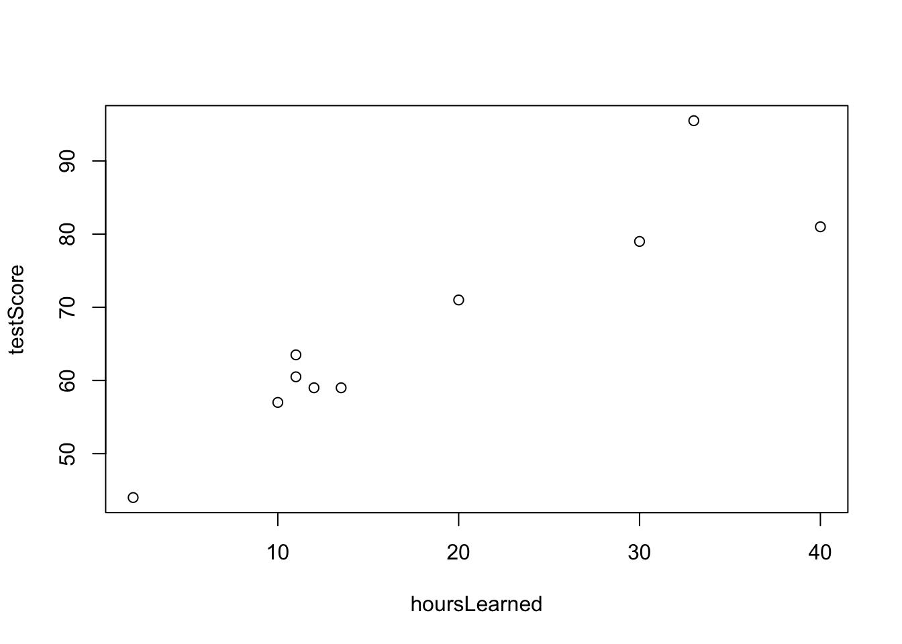
Pozorujeme pozitívnu závislosť, čo nie je prekvapivé. Miera ich lineárnej súvzťažnosti, teda korelácia, je rovná \(91.8\%\), takže veľmi vysoká.
## [1] 0.9177971Možno by sme chceli nejakým spôsobom popísať, ako presne rastie výsledok testu s úsilím, meraným počtom hodín strávených štúdiom, kvantifikovať túto závislosť.
Uvažujme situáciu, že absolútne nepripravený študent uhádne \(40\%\) a potom každá strávená hodina učenia mu zvýši očakávaný výsledok o 1 percentuálny bod.
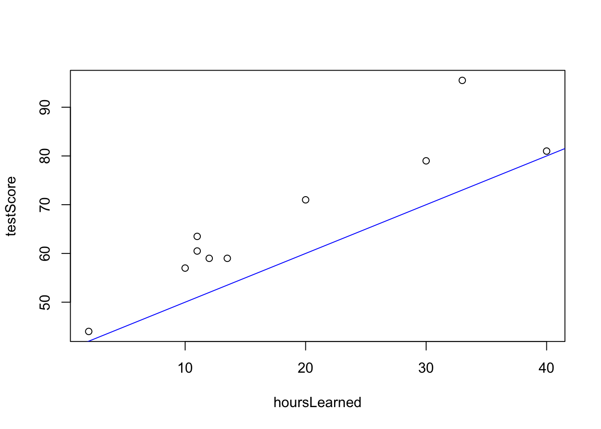
Nie je to úplne nemysliteľné ale keď sa zahľadím na dáta spolu s touto modrou čiarou, tak vidíme, že fituje len nedobre. Ak by sme si mysleli, že nepripravený študent uhádne 50% na teste a každá hodina štúdia navýši očakávaný výsledok o 0.8 percentuálneho bodu, potom by to vyzeralo nasledovne:
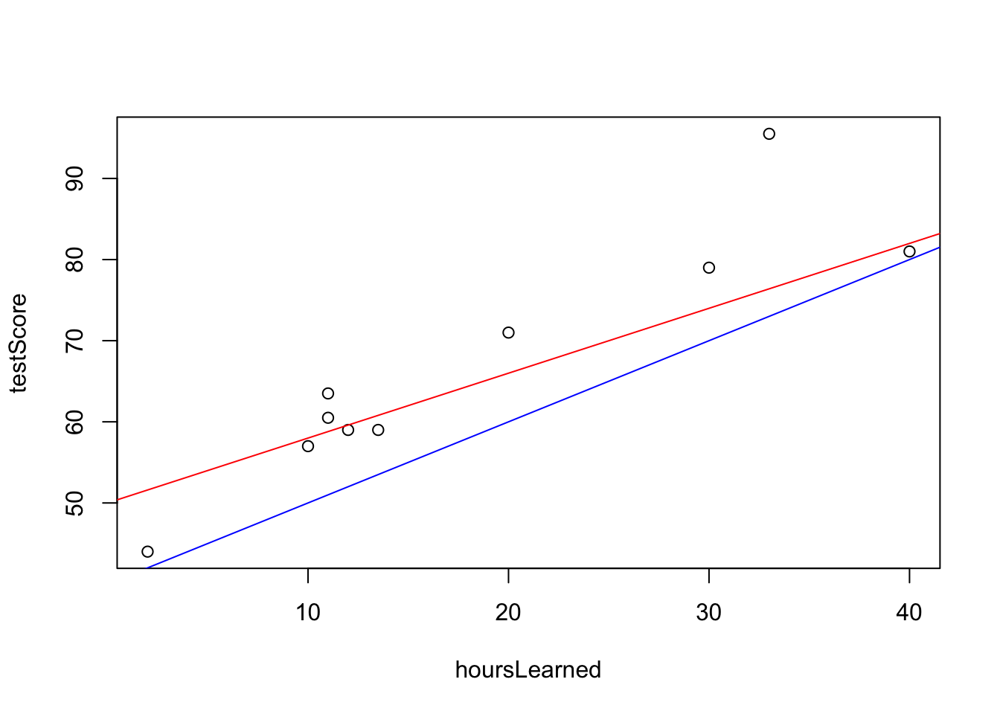
Táto priamka oveľa lepšie fituje dáta. Avšak asi by sme potrebovali nejaký systematickejší spôsob ako zvoliť tú priamku, ktorá najlepšie fituje dáta. Slovo “najlepšie” implikuje, že potrebujeme mať merateľné kritérium, ktoré bude posudzovať kvalitu fitu. Jedným takýmto kritériom je napríklad suma štovrcov vertikálnych vzdialeností.
plot(hoursLearned, testScore)
lmod <- lm(testScore ~ hoursLearned)
#summary(lmod)
beta <- lmod$coeff
predictedScore <- beta[1] + beta[2]*hoursLearned
lines(hoursLearned, predictedScore)
segments(hoursLearned, predictedScore,hoursLearned,testScore)
points(hoursLearned, predictedScore, col="red")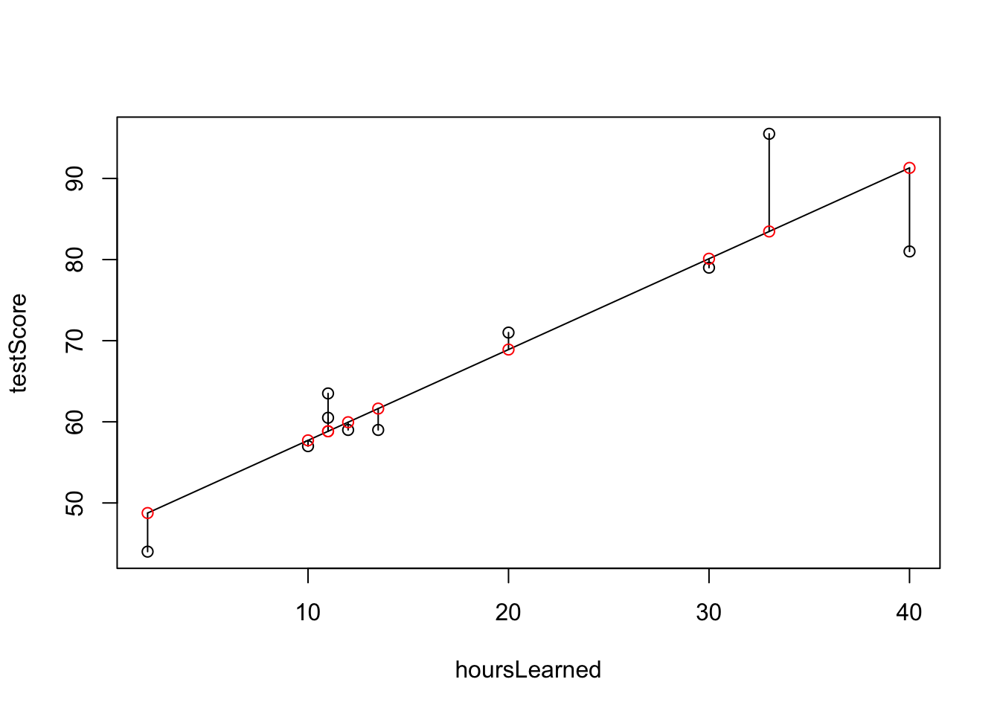
Spomedzi všetkých možných priamiek, je práve táto ktorá minimializuje sumu štvorcov vertikálnych výchyliek. Budeme používať nasledovné značenie:
- \(n\) je veľkosť dátovej vzorky (u nás \(n=10\))
- \(i \in \{1,2,\dots,n \}\) bude index pozorovania (u nás \(i\) bude označovať jedného z 10 študentov)
- \(x_i\) bude označovať nezávislú premennú pre pozorovanie \(i\) (koľko hodín sa učil \(i\)-ty śtudent)
- \(y_i\) bude označovať závislú premennú pre pozorovanie \(i\) (výsledok testu \(i\)-teho śtudenta)
Nájdenie najlepšej priamky v zmysle vedie na takýto optimializačný problém.
\[(\hat \beta_0, \hat \beta_1) = \arg \min_{(\beta_0, \beta_1)} \sum_{i=1}^{n} \Big(y_i - (\beta_0 + \beta_1 x_i) \Big)^2.\]
Na výpočet sme použili funkciu lm a naše odhady \((\hat \beta_0, \hat \beta_1)\) neznámych parametrov \((\beta_0, \beta_1)\) sú \(46.52\) a \(1.12.\)
Číslo \(46.52\) je výška v ktorej pretína čierna priamka os y a číslo \(1.12\) je smernica tejto priamky, teda ako rýchlo rastie.
Ešte predtým, ako sa zavŕtame do detailov, uvedomme si nasledovné skutočnosti
- Chyba je symetrická - penalizujeme podhodnotenie aj nadhodnotenie rovnako.
- Chyba rastie veľmi rýchlo - štvorec, teda kvadratická funkcia, rastie veľmi rýchlo a preto sa budeme snažiť vyhýbať veľmi veľkým chybám.
- Chyby sú merané ako vertikálne vzdialenosti. Takže ak vymeníme úlohy \(x\) a \(y\), tak naše výsledky sa zmenia.
Parametre minimalizujúce sumu štvorcov (a teda maximalizujú fit) sa v tomto prípade dajú spočítať aj analyticky - teda existuje explicitný vzťah do ktorého dosadíme hodnoty \(x_i, y_i\) a rovno priamo dostaneme \((\hat \beta_0, \hat \beta_1).\) Toto je užitočné lebo sa ani nemusíme spoliehať na numerické algoritmy.
Vzťah pre \((\hat \beta_0, \hat \beta_1)\) vyzerá nasledovne:
\[\hat \beta_1 = \frac{\sum_{i=1}^n (y_i-\bar{y})(x_i - \bar{x}) }{\sum_{i=1}^n (x_i-\bar{x})^2} \]
\[\hat \beta_0 = \bar y - \hat \beta_1 \bar x.\]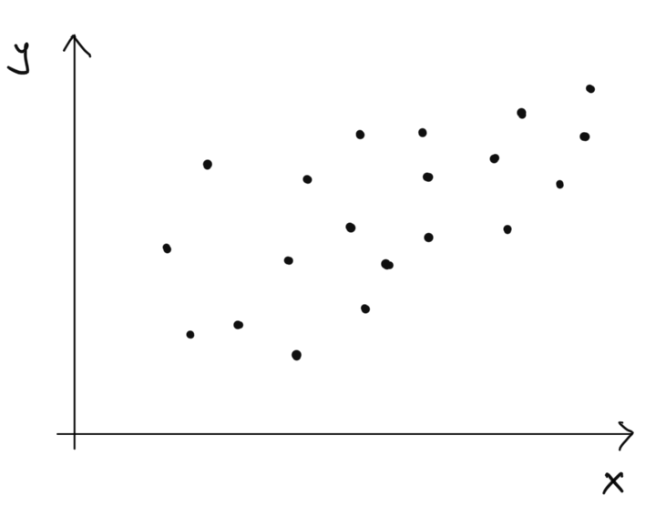
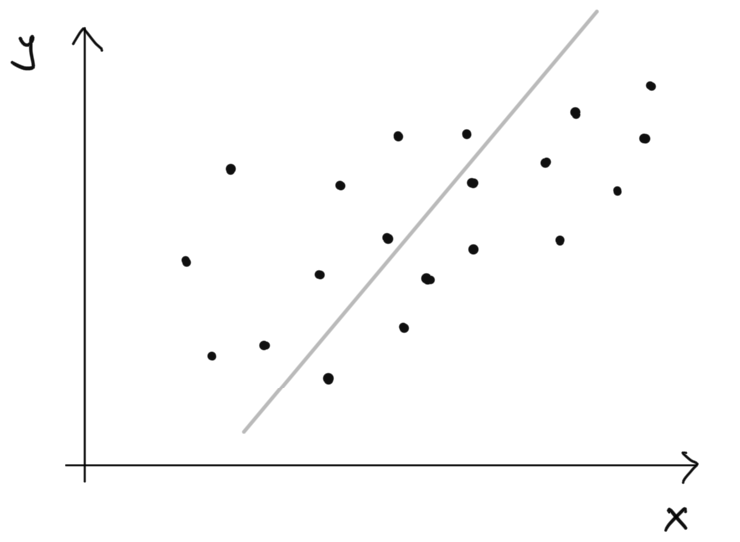
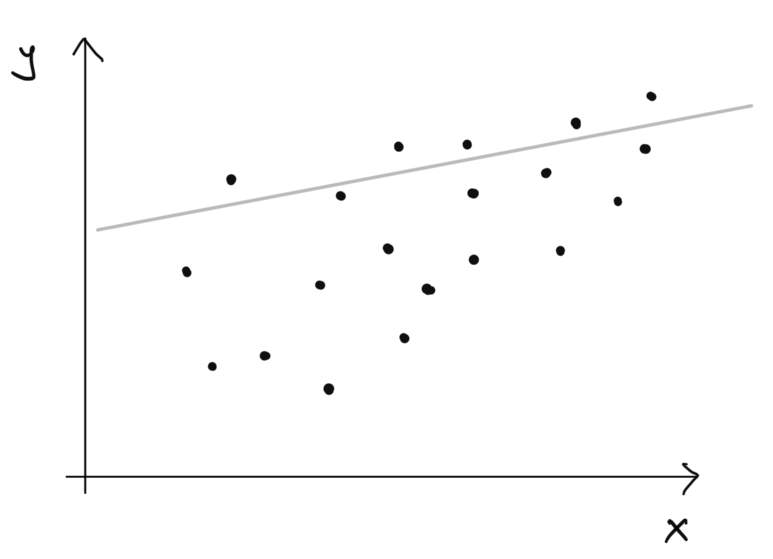
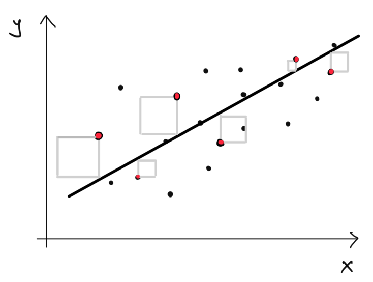
Obrázok 8.1: Rôzne fitované priamky.
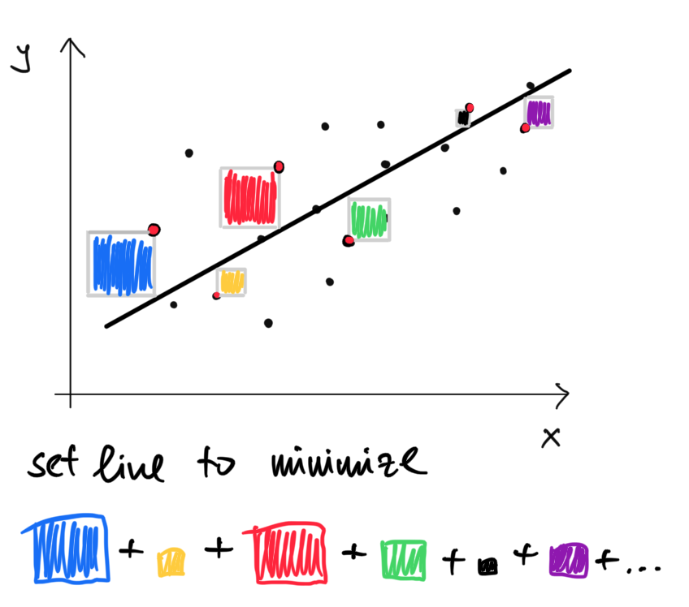
Obrázok 8.2: Ilustrácia metódy najmenších štvorcov
8.1 Lineárny regresný model
Môžeme sa na problém pozrieť nasledovne. Predpokladajme, že skutočné \(y_i\) a \(x_i\) sú v nasledujúcom vzťahu
\[y_i = \beta_0 + \beta_1 x_i + \epsilon_i,\] kde \(\epsilon_i\) označuje aproximačnú chybu. Takto rozdelíme variabilitu v \(y_i\) na systematickú časť (\(\beta_0 + \beta_1 x_i\)) a nesystematickú časť (\(\epsilon_i\)). Pomocou nášho odhadu \((\hat \beta_0, \hat \beta_1)\) neznámych parametrov \((\beta_0, \beta_1)\) teda dostávame odhad \(\hat \epsilon_i = y_i - (\hat \beta_0 + \hat \beta_1 x_i)\) skutočných aproximačných chýb \(\epsilon_i\), ktoré sú nepozorované.
Toto je samozrejme nejaké zjednodušenie. Nemusíme veriť, že je to presne tak, robíme to preto, aby sme systematizovali kvantifikáciu vzťahu medzi dvomi veličinami. Ak predpokláme o chybách, že sú rozdelené normálne
\[\epsilon_i \sim N(0, \sigma^2),\] tak potom vieme odvodiť aj pravdepodobnostné správanie samotných odhadov \((\hat \beta_0, \hat \beta_1),\) ktoré majú taktiež normálne rozdelenie a sú centrované okolo skutočných hodnôt \((\beta_0,\beta_1).\)
8.2 Maticová notácia
Ak rovnice \(y_i = \beta_0 + \beta_1 x_i + \epsilon_i\) napíšeme pod seba \(i = 1,2,\dots,n,\) dostaneme
\[ \begin{pmatrix}y_1 \\ y_2 \\ \vdots \\ y_n \end{pmatrix} = \begin{pmatrix}1 & x_1 \\1 & x_2 \\ \vdots& \vdots \\ 1 & x_n \end{pmatrix} \begin{pmatrix}\beta_0 \\ \beta_1 \end{pmatrix} + \begin{pmatrix}\epsilon_1 \\ \epsilon_2 \\ \vdots \\ \epsilon_n \end{pmatrix}\] alebo skrátene len \[y = X\beta + \epsilon.\]
Odhad minimalizujúci súčet štvorcov odchýlok je v maticovom zápise nasledovný:
\[\hat \beta = (X^T X)^{-1} X^T y\]
Ak uvažujeme, že \(\epsilon_i \sim N(0, \sigma^2)\) potom \(\epsilon \sim N(0, \sigma^2I_n),\) kde \(I_n\) označuje \(n \times n\) maticu identity (diagonálnu maticu s jednotkami na diagonále a nulami inde).
\[\begin{eqnarray*} \hat \beta &=& (X^T X)^{-1} X^T y \\ &=& (X^T X)^{-1} X^T (X\beta + \epsilon) \\ &=& \beta + (X^T X)^{-1} X^T\epsilon \end{eqnarray*}\]
Preto
\[\begin{eqnarray*} \hat \beta &\sim& N(\beta, (X^T X)^{-1} X^T Var[\epsilon] X (X^T X)^{-1} )\\ &\sim& N(\beta, (X^T X)^{-1} X^T \sigma^2I_n X (X^T X)^{-1} )\\ &\sim& N(\beta, \sigma^2 (X^T X)^{-1} X^T X (X^T X)^{-1} )\\ &\sim& N(\beta, \sigma^2 (X^T X)^{-1}). \end{eqnarray*}\]
Teda my úplne presne vieme aké má pravdepodobnostné rozdelenie. Až na varianciu chýb \(\sigma^2\). Tú nevieme a znova len budeme musieť odhadnúť. Dobrým odhadom (nevychýleným) je
\[\hat \sigma^2 = \sum_{i=1}^n \frac{\hat \epsilon_i^2}{n-k} = \sum_{i=1}^n \frac{ \left(y_i - (\beta_0 + \beta_1 x_i)\right)^2}{n-k},\] kde \(k\) je počet parametrov v modeli (v našom prípade 2).
Tento odhad variancie chýb použijeme na odhad kovariančnej matice \(\hat \beta\):
\[\hat Var[\hat \beta] = \hat Var\left[\begin{pmatrix}\hat \beta_0 \\ \hat \beta_1 \end{pmatrix}\right] = \hat \sigma^2 (X^T X)^{-1}.\] Diagonálne elementy \(2 \times 2\) matice \(Var[\hat \beta]\) sú \(Var\left[\hat \beta_0\right]\) a \(Var\left[\hat \beta_1\right].\) Podobne diagonálne členy odhadu (symetrickej) matice \(\hat [\hat \beta]\) sú \(\hat Var\left[\hat \beta_0\right]\) a \(\hat Var\left[\hat \beta_1\right]\), mimo diagonály sú \(\hat Cov\left[\hat \beta_0,\hat \beta_1\right]\).
8.3 Názvoslovie
Pripomeňme si, čo je čo. V matematike je pekným zvykom rozumieť, čo ktoré objekty označujú.
- \(x_4\) je náhodná premenná, ide o náhodnú premennú \(x\) nameranú pre štvrté pozorovanie,
- \(y_7\) je náhodná premenná, ide o náhodnú premennú \(y\) nameranú pre siedme pozorovanie,
- \(\epsilon_2\) je náhodná premenná, realizáciu tejto náhodnej premennej druhéhp pozorovania nepozorujeme,
- \(\bar x\) je náhodná premenná (lebo je to funkcia iných náhodných premenných),
- \(\bar y\) je náhodná premenná (lebo je to funkcia iných náhodných premenných),
- \(\beta_0\) je číslo. Fixné ale nám neznáme. Hovorí o priesečníku (s osou \(y\)) neznámej ale fixnej priamky \(\beta_0 + \beta_1 x\),
- \(\hat \beta_0\) je náhodná premenná. Je funkciou iných náhodných premenných a odhaduje nám neznáme číslo \(\beta_0\),
- \(\beta_1\) je číslo. Fixné ale nám neznáme. Hovorí o smernici neznámej ale fixnej priamky \(\beta_0 + \beta_1 x\),
- \(\hat \beta_1\) je náhodná premenná. Je funkciou iných náhodných premenných a odhaduje nám neznáme číslo \(\beta_1\),
- \(y\) je vektor náhodných premenných,
- \(X\) je matica náhodných premenných, ktorá sa skladá z dvoch stĺpcov: jednotiek a vektora náhodných premenných \(x_1\) až \(x_n\),
- \(\beta\) je fixný ale nám neznámy \(2 \times 1\) vektor,
- \(\hat \beta\) je náhodný vektor,
- \(\sigma^2\) je fixné ale nám neznáme číslo. Je to variancia chýb \(\epsilon_i\). Uvažujeme, že sú rovnaké pre všetky \(i=1,\dots,n,\)
- \(\hat \sigma^2\) je náhodná premenná. Je to odhad nám neznámej hodnoty \(\sigma^2\),
- \(Var\left[\hat \beta\right] = \sigma^2 (X^T X)^{-1}\) je kovariančná matica náhodného vektora \(\hat \beta\),
- \(\hat Var\left[\hat \beta\right] = \hat \sigma^2 (X^T X)^{-1}\) je odhad kovariančnej matice náhodného vektora \(\hat \beta\).
8.4 Ako na to
Čiaru minimalizujúcu fit v zmysle najmenších štvorcov odchýlok dostaneme aj použitím funkcie geom_smooth možnosťou method="lm" a formula = "y~x" ako je uvedené nižšie.
library(tidyverse)
df <- data.frame(hours = hoursLearned,
score = testScore)
ggplot(data=df, aes(x=hours,y=score)) +
geom_point()+
geom_smooth(method="lm",
formula = "y~x",
se=FALSE)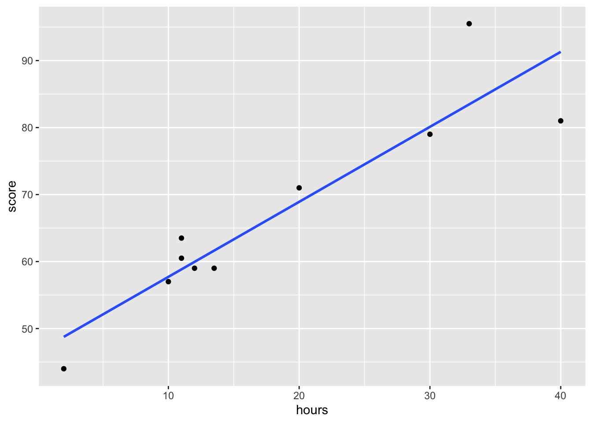
Ak chceme detailné informácie o krivke, použijeme funkciu lm a summary.
##
## Call:
## lm(formula = testScore ~ hoursLearned)
##
## Residuals:
## Min 1Q Median 3Q Max
## -10.2990 -2.2503 -0.8337 1.9847 12.0375
##
## Coefficients:
## Estimate Std. Error t value Pr(>|t|)
## (Intercept) 46.5193 3.6968 12.584 1.49e-06 ***
## hoursLearned 1.1195 0.1712 6.538 0.000181 ***
## ---
## Signif. codes: 0 '***' 0.001 '**' 0.01 '*' 0.05 '.' 0.1 ' ' 1
##
## Residual standard error: 6.246 on 8 degrees of freedom
## Multiple R-squared: 0.8424, Adjusted R-squared: 0.8226
## F-statistic: 42.75 on 1 and 8 DF, p-value: 0.0001807Je tu veľa informácií. Všetky tieto čísla si dopodrobna rozoberieme.
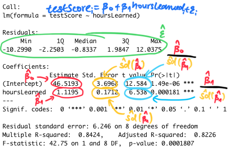
Obrázok 8.3: Regresná tabuľka
- Parameter formula nám hovorí akou rovnicou aproximujeme \(y_i\) pomocou \(x_i\).
- Residuals označujú charakteristiky distribúcie odhadovaných chýb, takže hodnoty \(\hat \epsilon_i\).
- V tabuľke koeficientov je prvý riadok o odhade \(\hat \beta_0\) a druhý riadok o odhade \(\hat \beta_1\).
- Prvý stĺpec sú samotné hodnoty odhadov, v druhom sú odhady smerodajných odchýlok odhadov, nazývané aj štandardné chyby (v angl. Standard errors).
- V treťom stĺpci sú testovacie štatistiky, ktoré testujú hypotézu \(H_0: \beta_0 = 0\) a \(H_0: \beta_1 = 0\) a v poslednom stĺpci sú príslušné p-hodnoty týchto testov (viac o testovacích štatistikách neskôr).
Pokračujeme ďalej:
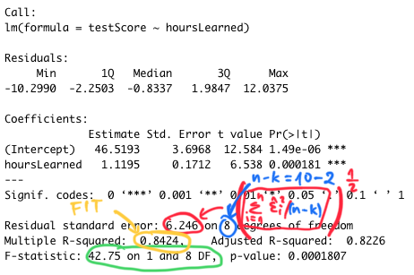
Obrázok 8.4: Regresná tabuľka
- V tabuľke máme aj reziduálnu štandardnú chybu, čo je odhad smerodajnej odchýlky reziduí \(\hat{sd}[\hat \epsilon]\),
- Počet stupňov voľnosti je počet pozorovaní mínus počet parametrov v modeli,
- \(R^2\) je číslo medzi 0 a 1, ktoré vyjadruje kvalitu fitu. Hodnota 0 znamená, že \(x\) neposkytuje žiadnu užitočnú informáciu na fitovanie \(y\) (pomocou lineárneho modelu), hodnota 1 znamená, že \(x\) perfektne predikuje \(y\) (pomocou lineárneho modelu),
- F štatistika testuje významnosť regresie, teda v tomto prípade porovnáva modely \(y_i = \beta_0 + \beta_1 x_i + \epsilon_i,\) a \(y_i = \beta_0 + \epsilon_i,\) takže v tomto prípade testuje \(H_0: \beta_1 = 0.\) (Všimnime si, že p-hodnota je rovnaká ako v riadku pri \(\hat \beta_1\), až na zaokrúhlenie).
8.5 Geometria najmenších štvorcov
Metóda, ktorá nastavuje parametre neznámej priamky tak, že minimalizuje sumu štvorcov má zaujimavú geometrickú interpretáciu.
Ide totiž o projekciu.
Snažíme sa projektovať vektor \(y = (y_1, y_2, \dots, y_n)^T\) do podpriestoru generovaného konštantných jednotiek \((1,1,\cdots,1)^T\) a \(x = (x_1, x_2, \dots, x_n)^T\).
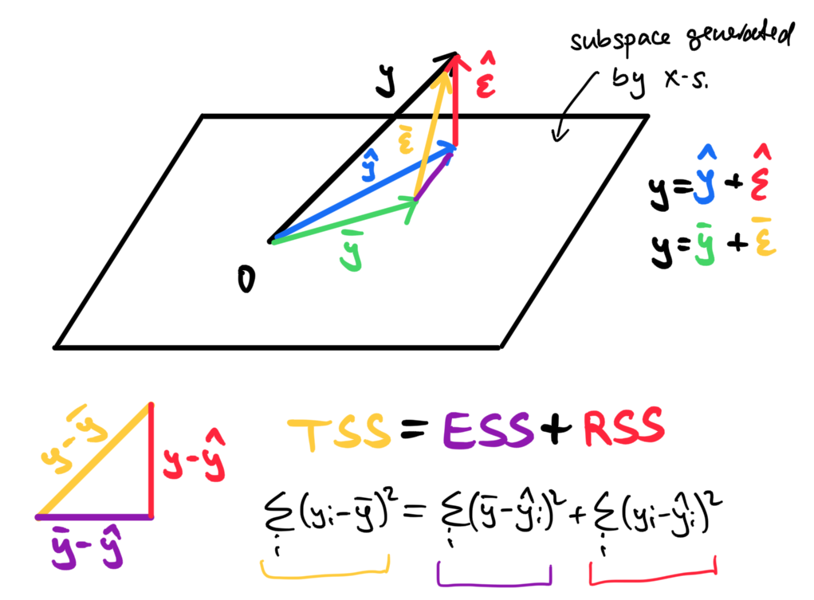
Obrázok 8.5: Geometria najmenších štvorcov
Obrázok ukazuje geometriu najmenších štvorcov. Každý vektor (šípka) reprezentuje bod v n-rozmernom priestore. Vektor \(y\) sa nenachádza v priestore generovanom vektorom konštantných jednotiek a \(x\). Metóda najmenších štvorcov projektu vektor \(y\) do tohoto podpriestoru, teda hľadá minimálnu vzdialenosť červeného vektora \(\hat \epsilon\) v zmysle euklidovskej vzdialenosti (to je taká tá obyčajná na akú sme zvyknú v našom 3D svete a meriame ju pravítkom). Takže tu máme viacerozmernú verziu Pytagorovho trojuholníka.
Miera (lineárneho) fitu je popísaná nasledujúcim vzťahom:
\[R^2 = 1- \frac{\sum (y_i - \hat y_i )^2}{\sum (y_i - \bar y)^2} = 1- \frac{{RSS}}{{TSS}} = \frac{ESS}{{TSS}} = \frac{\sum (\bar y - \hat y_i )^2}{\sum (y_i - \bar y)^2},\] kde používame nasledovné značenie
- RSS - reziduálna suma štvorcov (residual sum of squares),
- ESS - vysvetlená suma štvorcov (explained sum of squares),
- TSS - celková suma štvorcov (total sum of squares).
Nejde v podstate o nič iné ako odhad lineárnej súvzťažnosti medzi \(y\) a odhadovaných \(\hat y\): \[R^2 = \left(\hat{cor}(\hat y, y)\right)^2 = \frac{\sum (\bar y - \hat y_i )^2}{\sum (y_i - \bar y_i)^2}.\]
Hodnota \(R^2\) nám teda hovorí o miere lineárnej súvzťažnosti medzi fitovanými hodnotami \(\hat y\) a skutočnými hodnotami \(y\). Toto však môže byť matúce, ak medzi dvomi premennými nie je lineárny vzťah. (Tuto ide o menej zábavnú verziu datasetov s dinosaurom.)
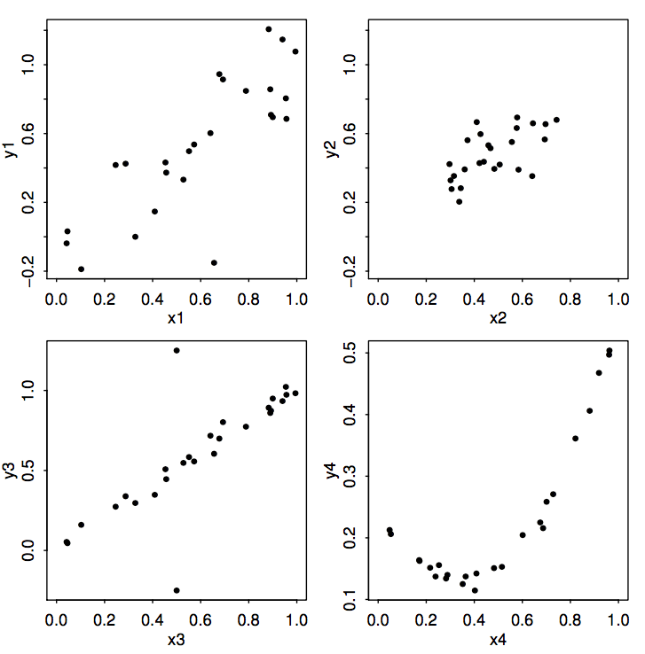
Obrázok 8.6: Veľmi rôzne dáta vedú na rovnaké miery fitu \(R^2\). (Zdroj: Faraway, Julian J. Linear models with R. Chapman and Hall/CRC, 2004.)
Ale to je tak vždy, keď sa komplexnú informáciu snažím skomprimovať do jedného čísla, svet je totiž rozmanitý.
8.6 Konfidenčné intervaly
Chceli by sme kvantifikovať neistotu spojenú s odhadom budúcich hodnôt. Ako veľmi si môžeme byť istí tým, že študent učiaci sa 20 hodín bude mať očakávaný počet bodov práve \(\hat \beta_0 + \hat \beta_1 20 = 46.52 + 1.12 \cdot 20 = 68.92\)?
Nakoľko vieme kvantifikovať neistotu spojenú s \(\hat \beta_0\) a \(\hat \beta_1\), môžeme použiť na \(\hat \beta_0 + \hat \beta_1 x\) pre akékoľvek číslo \(x\).
Stredná hodnota pre modelovanú premennú ak by \(x\) nadobúdalo hodnotu \(x_0\) je \[\hat y_0 = \hat \beta_0 + \hat \beta_1 x_0 = (1, x_0) \begin{pmatrix} \hat \beta_0 \\ \hat \beta_1 \end{pmatrix}\]
Zatiaľčo budúca hodnota je \[y_0 = \hat y_0 + \epsilon_0\]
- \(95\%\)ný konfidenčný interval pre strednú hodnotu \(\hat y_0 \pm t_{n-p}^{(\alpha/2)} \hat \sigma \sqrt{ (1, x_0) (X^T X)^{-1}(1, x_0)^T}\)
- \(95\%\)ný predičný interval pre budúcu hodnotu \(\hat y_0 \pm t_{n-p}^{(\alpha/2)} \hat \sigma \sqrt{1 + (1, x_0) (X^T X)^{-1}(1, x_0)^T}\)
Ten druhý interval je širší, lebo v sebe zahŕňa aj informáciu o buducej chybe \(\epsilon_0\)
\[\begin{eqnarray*} var(\hat y_0 + \epsilon_0) &=& var(\hat y_0)+ var(\epsilon_0) \\ &=& (1, x_0) (X^T X)^{-1}(1, x_0)^T \sigma^2 + \sigma^2 \\ &=& \big({\color{green}1 +} (1, x_0) (X^T X)^{-1}(1, x_0)^T\big) \sigma^2 \end{eqnarray*}\]
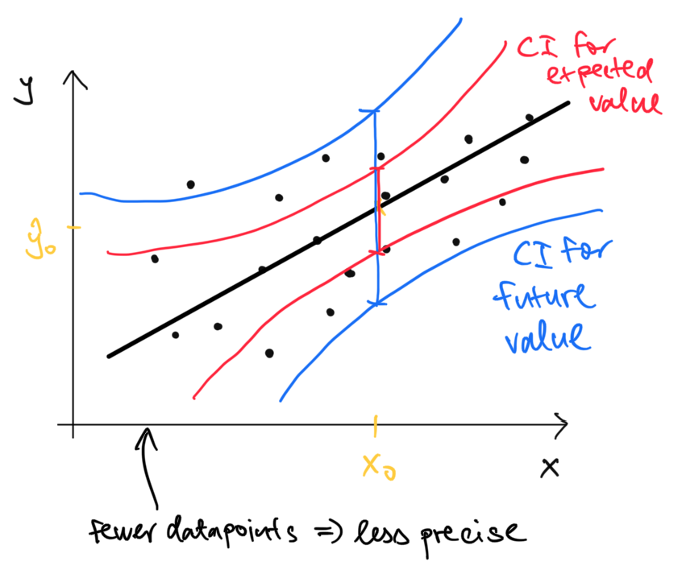
Obrázok 8.7: Konfidenčné a predikčné intervaly.
Predikčné intervaly nie sú v ggplot2 natívne, preto si ich musíme dorobiť mechanicky.
## Warning in predict.lm(lmod, interval = "prediction"): predictions on current data refer to _future_ responsesdf2 <- cbind(df, pi95)
ggplot(data=df2, aes(x=hours,y=score)) +
geom_point()+
geom_smooth(method="lm",
formula = "y~x",
se=TRUE) +
geom_line(aes(y=lwr), color = "red", linetype = "dashed")+
geom_line(aes(y=upr), color = "red", linetype = "dashed")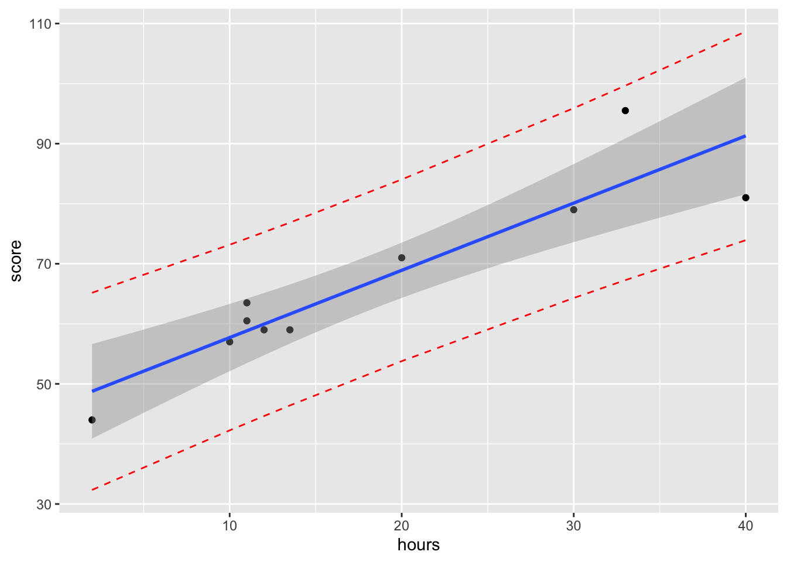
8.7 Viacrozmerná lineárna regresia
Doteraz nám lineárna regresia slúžila na modelovanie vzťahu medzi dvomi veličinami. Častokrát však chceme použiť mnoho rôznych faktorov na predikovanie nejakej premennej. Napríklad
- rôzne vlastnosti ojazdeného auta môžu determinovať jeho trhovú cenu,
- rôzne vlastnosti absolventa budú terminovať jeho mzdu o 10 rokov,
- rôzne vlastnosti filmu môžu determinovať jeho obľúbenosť alebo zisk, ktorý vygeneruje.
Začneme triviálnym rozšírením nášho modelu. Teraz nebudeme mať len jeden prediktor \(x\) ale mnoho. Model bude vyzerať nasledovne:
\[y_i = \beta_0 + \beta_1 x_{i1} + \beta_2 x_{i2} + \dots + \beta_p x_{ip} + \epsilon_{i}\]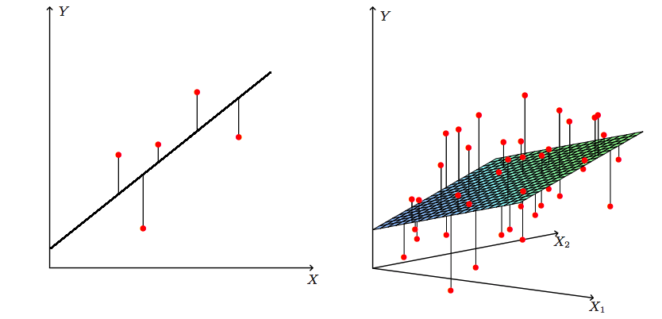
Obrázok 8.8: Vizualizácia lineárnej regresie, vľavo sa použitím len jednej vysvetľovacej premennej, vpravo dvomi. (Zdroj: Faraway, Julian J. Linear models with R. Chapman and Hall/CRC, 2004.)
Maticová notácia nám ostáva, len musíme predefinovať maticu \(X\):
\[ \begin{pmatrix}y_1 \\ y_2 \\ \vdots \\ y_n \end{pmatrix} = \begin{pmatrix}1 & x_{11} & x_{12} & \dots & x_{1n} \\1 & x_{21} & x_{22} & \dots & x_{2n} \\ \vdots& \vdots& \vdots & \vdots & \vdots \\ 1 & x_{n1} & x_{n2} & \dots & x_{1n} \end{pmatrix} \begin{pmatrix}\beta_0 \\ \beta_1 \\ \beta_2\\ \vdots \\ \beta_p \end{pmatrix} + \begin{pmatrix}\epsilon_1 \\ \epsilon_2 \\ \vdots \\ \epsilon_n \end{pmatrix}\] alebo skrátene len \[y = X\beta + \epsilon.\]
Preto bude zápis odhadu minimalizujúceho súčet štvorcov odchýlok v maticovom zápise rovnaký ako predtým:
\[\hat \beta = (X^T X)^{-1} X^T y\] Demonštrujeme si to na príklade. Chceli by sme vysvetlovať tržby na základe objemu peňazí investovaného do rôzneho typu reklamy (facebook, youtube, noviny).
library(datarium)
data("marketing", package = "datarium")
#let us try to explain sales with ads on both youtube and facebook
summary(marketing)## youtube facebook newspaper sales
## Min. : 0.84 Min. : 0.00 Min. : 0.36 Min. : 1.92
## 1st Qu.: 89.25 1st Qu.:11.97 1st Qu.: 15.30 1st Qu.:12.45
## Median :179.70 Median :27.48 Median : 30.90 Median :15.48
## Mean :176.45 Mean :27.92 Mean : 36.66 Mean :16.83
## 3rd Qu.:262.59 3rd Qu.:43.83 3rd Qu.: 54.12 3rd Qu.:20.88
## Max. :355.68 Max. :59.52 Max. :136.80 Max. :32.40##
## Call:
## lm(formula = sales ~ youtube + facebook + newspaper, data = marketing)
##
## Residuals:
## Min 1Q Median 3Q Max
## -10.5932 -1.0690 0.2902 1.4272 3.3951
##
## Coefficients:
## Estimate Std. Error t value Pr(>|t|)
## (Intercept) 3.526667 0.374290 9.422 <2e-16 ***
## youtube 0.045765 0.001395 32.809 <2e-16 ***
## facebook 0.188530 0.008611 21.893 <2e-16 ***
## newspaper -0.001037 0.005871 -0.177 0.86
## ---
## Signif. codes: 0 '***' 0.001 '**' 0.01 '*' 0.05 '.' 0.1 ' ' 1
##
## Residual standard error: 2.023 on 196 degrees of freedom
## Multiple R-squared: 0.8972, Adjusted R-squared: 0.8956
## F-statistic: 570.3 on 3 and 196 DF, p-value: < 2.2e-16Môžeme si všimnúť, že tržby sú pozitívne asociované s nákladami na reklamu na Youtube a Facebooku a príslušné koeficienty sú štatisticky významné. Reklama v novinách je len veľmi málo asociovaná s tržbami, dokonca negatívne ale jej koeficient nie je štatisticky významný. A táto negatívna parciálna asociácia je tam aj napriek tomu, že samotná korelácia medzi reklamou v novinách a tržbami je pozitívna. Môže to byť napríklad tým, že keď firmy inzerujú na Facebooku, tak inzerujú aj v novinách ale v skutočnosti je ta tá Facebooková reklama, ktorá zaberá. Každopádne teraz skúmame len asociácie. Nevieme, prečo v skutočnosti tržby rastú.
library(corrplot)
corrplot(cor(marketing), type = "upper", order = "hclust",
tl.col = "black", tl.srt = 45)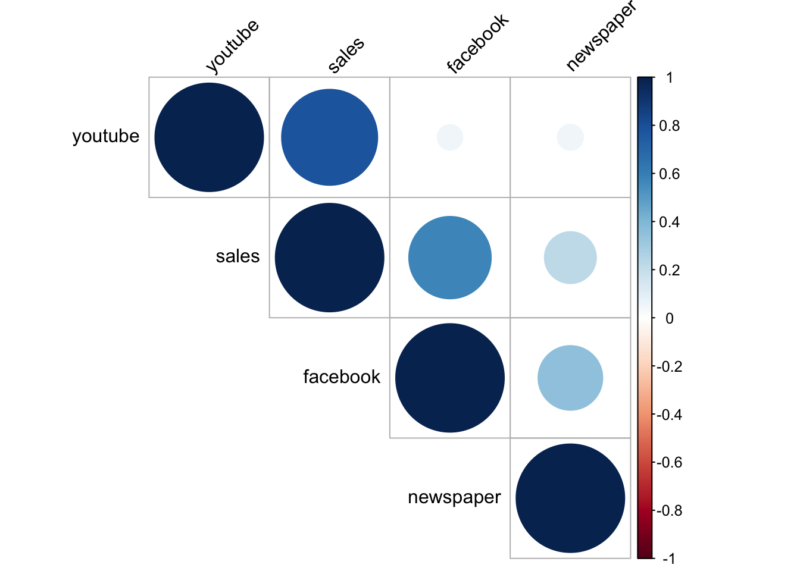
Teraz si zobrazme asociáciu medzi tržbami a štatisticky významými prediktormi (youtube, facebook), spolu s odhadnutou regresnou plochou.
# we will follow https://rpubs.com/pjozefek/576206
# and modify it for our purposes
attach(marketing)
y <- sales
x1 <- facebook
x2 <- youtube
lmodM <- lm(y ~ x1 + x2)
summary(lmodM)##
## Call:
## lm(formula = y ~ x1 + x2)
##
## Residuals:
## Min 1Q Median 3Q Max
## -10.5572 -1.0502 0.2906 1.4049 3.3994
##
## Coefficients:
## Estimate Std. Error t value Pr(>|t|)
## (Intercept) 3.50532 0.35339 9.919 <2e-16 ***
## x1 0.18799 0.00804 23.382 <2e-16 ***
## x2 0.04575 0.00139 32.909 <2e-16 ***
## ---
## Signif. codes: 0 '***' 0.001 '**' 0.01 '*' 0.05 '.' 0.1 ' ' 1
##
## Residual standard error: 2.018 on 197 degrees of freedom
## Multiple R-squared: 0.8972, Adjusted R-squared: 0.8962
## F-statistic: 859.6 on 2 and 197 DF, p-value: < 2.2e-16library(plot3D)
grid.lines = 20
x1.pred <- seq(min(x1), max(x1), length.out = grid.lines)
x2.pred <- seq(min(x2), max(x2), length.out = grid.lines)
x1x2 <- expand.grid( x1 = x1.pred, x2 = x2.pred)
y.pred <- matrix(predict(lmodM, newdata = x1x2),
nrow = grid.lines, ncol = grid.lines)
# create the fitted points for droplines to the surface
fitpoints <- predict(lmodM)
# scatter plot with regression plane
scatter3D(x1, x2, y, pch = 19, cex = 1,colvar = NULL, col="red",
theta = -130, phi = 20, bty="b",
xlab = "youtube", ylab = "facebook", zlab = "sales",
surf = list(x = x1.pred, y = x2.pred, z = y.pred,
facets = TRUE, fit = fitpoints,
col=ramp.col (col = c("dodgerblue3","seagreen2"),
n = 300, alpha=0.9), border="black"),
main = "Marketing")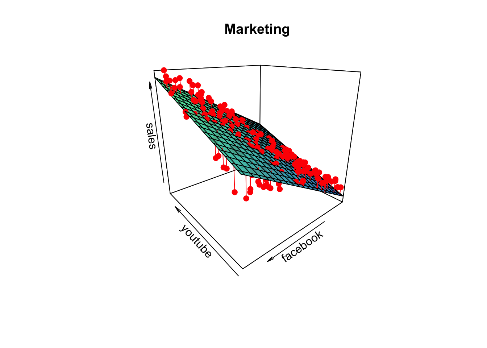
## Nelineárne vzťahy a lineárna regresiaNiekedy je závislosť medzi dvomi premennými zjavne nelineárna. Ak sa nazdávame, že by bola vhodne modelovaná kvadratickou funkciou, potom by sme chceli fitovať nasledovný model.
\[y_i = \beta_0 + \beta_1 x_i + \beta_2 x^2_i + \epsilon_i,\] Takýto model odhadneme nasledovne (dva spôsoby).
marketing$youtube2 <- (marketing$youtube)^2
#lmodq <- lm(sales ~ youtube + youtube2, data=marketing)
#summary(lmod)
lmodq2 <- lm(sales ~ youtube + I(youtube^2), data=marketing)
summary(lmodq2)##
## Call:
## lm(formula = sales ~ youtube + I(youtube^2), data = marketing)
##
## Residuals:
## Min 1Q Median 3Q Max
## -9.2213 -2.1412 -0.1874 2.4106 9.0117
##
## Coefficients:
## Estimate Std. Error t value Pr(>|t|)
## (Intercept) 7.337e+00 7.911e-01 9.275 < 2e-16 ***
## youtube 6.727e-02 1.059e-02 6.349 1.46e-09 ***
## I(youtube^2) -5.706e-05 2.965e-05 -1.924 0.0557 .
## ---
## Signif. codes: 0 '***' 0.001 '**' 0.01 '*' 0.05 '.' 0.1 ' ' 1
##
## Residual standard error: 3.884 on 197 degrees of freedom
## Multiple R-squared: 0.619, Adjusted R-squared: 0.6152
## F-statistic: 160.1 on 2 and 197 DF, p-value: < 2.2e-16Zo sumárnej tabuľky vidime, že kvadratický člen má pridružený p-hodnotu tesne nad \(5\%\). Na tomto obrázku to môžeme porovnať vizuálne.
ggplot(data=marketing, aes(x=youtube, y=sales)) +
geom_point() +
geom_smooth(method="lm",formula="y ~ x") +
geom_smooth(method="lm",formula="y ~ x + I(x^2)",col="red")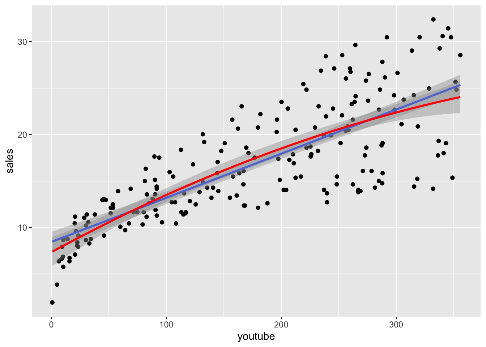
Teraz môžeme tieto myšlienky nakombinovať. Uvažujme, nech je závislosť v premennej youtube kvadratická a nech je v premennej facebook lineárna:
\[sales_i = \beta_0 + \beta_1 youtube_i + \beta_2 youtube^2_i + \beta_3 facebook_i + \epsilon_i,\]
##
## Call:
## lm(formula = sales ~ youtube + I(youtube^2) + facebook, data = marketing)
##
## Residuals:
## Min 1Q Median 3Q Max
## -8.8632 -1.0586 -0.0598 1.1536 4.2870
##
## Coefficients:
## Estimate Std. Error t value Pr(>|t|)
## (Intercept) 1.545e+00 4.306e-01 3.588 0.000421 ***
## youtube 7.844e-02 4.985e-03 15.736 < 2e-16 ***
## I(youtube^2) -9.465e-05 1.397e-05 -6.775 1.42e-10 ***
## facebook 1.930e-01 7.293e-03 26.465 < 2e-16 ***
## ---
## Signif. codes: 0 '***' 0.001 '**' 0.01 '*' 0.05 '.' 0.1 ' ' 1
##
## Residual standard error: 1.821 on 196 degrees of freedom
## Multiple R-squared: 0.9167, Adjusted R-squared: 0.9154
## F-statistic: 719 on 3 and 196 DF, p-value: < 2.2e-16Berúc do úvahy aj reklamu na Facebooku sa kvadratický člen pri Youtube ukazuje ako silne signifikantný.
8.8 Testovanie podmodelov
Ak sme v situácii, že máme 2 modely, jeden zložitejší, čo fituje dáta lepšie a jeden jednoduchší, ktorý je zasa elegantnejší. Ako sa medzi nimi rozhodujeme? Za predpokladu normality chýb na to môžeme použiť testovaciu štatistiku. Ak by bol menší model (ktorý je len špeciálnou verziou väčšieho modelu) správny, má nasledovná štatistika F rozdelenie.
\[\frac{(RSS_{rest}-RSS_{full})/df}{\hat \sigma^2} \sim F_{df, n-p},\] kde
- \(RSS_{rest}\) je reziduálna suma štvorcov menšieho (jednoduchšieho) modelu
- \(RSS_{full}\) je reziduálna suma štvorcov plného (zložitejšieho) modelu
- \(df\) je počet reštrikcií, ktoré z plného modelu urobia jednoduchší
- \(n\) je počet pozorovaní
- \(p\) je počet premenných vo veľkom modeli
- \(\sigma^2\) je odhad variancie reziduí.
Geometria je nasledovná
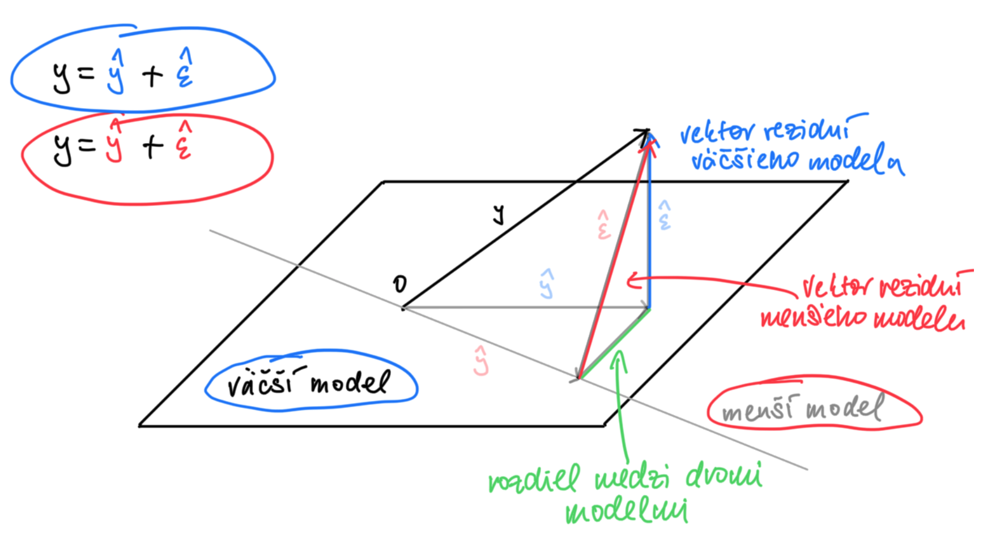
Obrázok 8.9: Porovnanie zložitejšieho a jednoduchšieho modelu.
Test toho, či je podmodel korektný, je implementovaný nasledovne:
lmod_full <- lm(sales ~ youtube + I(youtube^2) + facebook + newspaper, data=marketing)
lmod_rest <- lm(sales ~ youtube + facebook, data=marketing)
RSS_rest <- sum(lmod_rest$residuals^2)
RSS_full <- sum(lmod_full$residuals^2)
anova(lmod_rest,lmod_full)## Analysis of Variance Table
##
## Model 1: sales ~ youtube + facebook
## Model 2: sales ~ youtube + I(youtube^2) + facebook + newspaper
## Res.Df RSS Df Sum of Sq F Pr(>F)
## 1 197 801.96
## 2 195 649.71 2 152.25 22.847 1.217e-09 ***
## ---
## Signif. codes: 0 '***' 0.001 '**' 0.01 '*' 0.05 '.' 0.1 ' ' 1Teraz tieto čísla zreprodukujeme mechanicky:
#get F-statistic
# this tests null hypothesis H0:beta1=0
(Fstat <- ((RSS_rest - RSS_full)/2) / (RSS_full/(200-5)) ) ## [1] 22.84728## [1] 1.217338e-09Tu sme testovali reštrikciu, či je kvadratický člen youtube nevýznamný a zároveň či je prediktor newspaper nevýznamný, teda či sú prislúchajúce koeficienty nulové.
8.9 Transformácie a interpretácia
V niektorých prípadoch modelujeme namiesto samotnej premennej jej rast. Napríklad je asi uveriteľnejšie uvažovať, že vzdelanie môže pomôcť zvýšit mzdu proporcionálne. To znamená, že absolvovanie vysokej školy zvýši mzdu v priemere približne o 20% a nie o 300eur. Rozdiel medzi 1000eur a 1300eur je totiž výraznejší z praktického hľadiska ako z 3500eur na 3800eur. Na modelovanie rastu používame logaritmickú transformáciu. Všetko si to ukážeme na našom príklade so študentami a ich výkonom na teste.
hoursLearned <- c(2,40,33,11,20,12,13.5,10,11,30,
6,22,45,20,11,22,40,29,47,9)
testScore <- c(44, 81, 95.5, 63.5, 71, 59, 59, 57, 60.5, 79,
45, 54, 50, 52, 50, 61, 68, 66, 64, 50)
group <- c(rep("A",10), rep("B",10))
gA <- (group=="A")*1
gB <- (group=="B")*1Na konci každého modelu je korektná interpretácia. Budeme uvažovať štyri rôzne modely.
- Level-level model \(testScore_i = \beta_0 + \beta_1 \log(hoursLearned_i) + \beta_2 g^A_i + \epsilon_i\)
- Log-level model ak budeme modelovať rast skóre pomocou hodín strávených učením \(\log(testScore_i) = \beta_0 + \beta_1 hoursLearned_i + \beta_2 g^A_i + \epsilon_i\)
- Level-log model ak budeme modelovať skóre pomocou rastu hodín strávených učením \(testScore_i = \beta_0 + \beta_1 \log(hoursLearned_i) + \beta_2 g^A_i + \epsilon_i\)
- Log-log model ak budeme modelovať rast skóre pomocou rastu hodín strávených učením \(\log(testScore_i) = \beta_0 + \beta_1 \log(hoursLearned_i) + \beta_2 g^A_i + \epsilon_i\)
Ktorý z týchto modelov je najrozumnejší? Treba zvažiť. Každopádne rozhodovanie by nemalo záležať na tom, ako dobre nám modelu fituje dáta. Do rozhovorov by sme mali prizvať niekoho, kto sa vyzná do danej problematiky.
8.9.1 Level-level model
\[testScore_i = \beta_0 + \beta_1 hoursLearned_i + \beta_2 g^A_i + \epsilon_i\]
##
## Call:
## lm(formula = testScore ~ gA + hoursLearned)
##
## Residuals:
## Min 1Q Median 3Q Max
## -19.0139 -4.0357 0.6593 3.5072 18.9040
##
## Coefficients:
## Estimate Std. Error t value Pr(>|t|)
## (Intercept) 39.5855 4.4224 8.951 7.65e-08 ***
## gA 15.4297 3.7988 4.062 0.000811 ***
## hoursLearned 0.6540 0.1426 4.585 0.000264 ***
## ---
## Signif. codes: 0 '***' 0.001 '**' 0.01 '*' 0.05 '.' 0.1 ' ' 1
##
## Residual standard error: 8.209 on 17 degrees of freedom
## Multiple R-squared: 0.6376, Adjusted R-squared: 0.595
## F-statistic: 14.96 on 2 and 17 DF, p-value: 0.0001789#our model predicts that for a given group fixed an increase of
# 1hour additional learning is associated with an increase of
# test score by 0.65 points on average
plot(hoursLearned, testScore, pch=group)
abline(lmod_lv_lv$coeff[1],lmod_lv_lv$coeff[3])
abline(lmod_lv_lv$coeff[1]+lmod_lv_lv$coeff[2],lmod_lv_lv$coeff[3])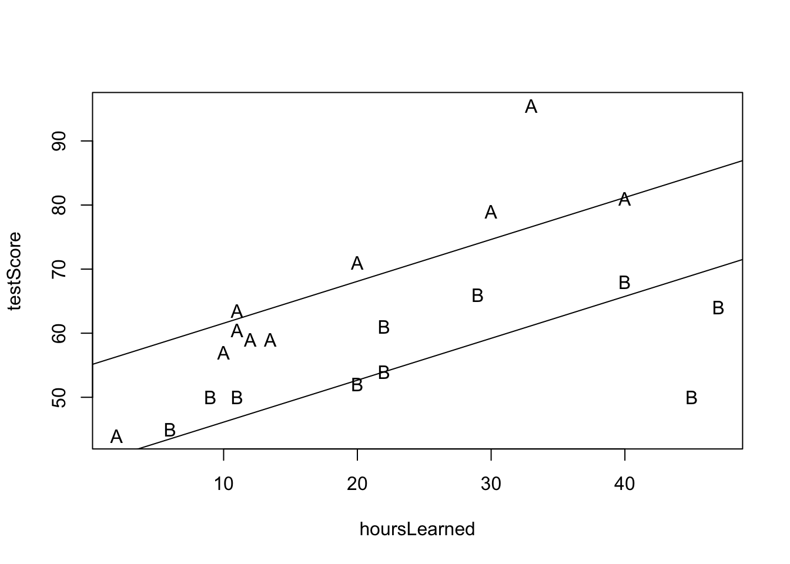
Interpretácia: Náš model predikuje, že pre danú skupinu žiakov je každá ďaľšia hodina učenia asociovaná s navýšením skóre v priemere o \(0.65\).
\[\begin{eqnarray*} y_i &=& \beta_0 + \beta_1 x_i + \epsilon_i \\ && x_i \rightarrow x_i + \Delta \\ && \implies \\ y_i &\rightarrow& \beta_0 + \beta_1 (x_i + \Delta) + \epsilon_i \\ y_i &\rightarrow& \beta_0 + \beta_1 x_i + \epsilon_i + \beta_1 \Delta \\ y_i &\rightarrow& y_i + \beta_1 \Delta \end{eqnarray*}\]
Tu je dôležité poznamenať niekoľko skutočností
- Náš model predikuje je dôležitý disclaimer a nielen slovná vata. Ide o to, že my nehovoríme o pravde, lebo nevieme aká je pravda. My hovoríme o našom lineárnom regresnom modeli, ktorý má len aproximovať realitu.
- pre danú skupinu žiakov znamená, že parameter \(g^A\) je zafixovaný.
- je asociovaná neznamená, že spôsobuje. Nevieme čo spôsobuje čo, netušíme nič o kauzalite. Popisujeme ako nejaké premenné zvyknú spolu nastávať.
Toto nie sú detaily. Naozaj nie. Korektná interpretácia precízne komunikuje výsledky a podčiarkuje limity použitej štatistickej metódy.
8.9.2 Log-level model
\[\log(testScore_i) = \beta_0 + \beta_1 hoursLearned_i + \beta_2 g^A_i + \epsilon_i\]
##
## Call:
## lm(formula = log(testScore) ~ gA + hoursLearned)
##
## Residuals:
## Min 1Q Median 3Q Max
## -0.309170 -0.043717 -0.000054 0.061891 0.225005
##
## Coefficients:
## Estimate Std. Error t value Pr(>|t|)
## (Intercept) 3.757613 0.067438 55.720 < 2e-16 ***
## gA 0.236549 0.057929 4.083 0.000774 ***
## hoursLearned 0.010302 0.002175 4.736 0.000191 ***
## ---
## Signif. codes: 0 '***' 0.001 '**' 0.01 '*' 0.05 '.' 0.1 ' ' 1
##
## Residual standard error: 0.1252 on 17 degrees of freedom
## Multiple R-squared: 0.6475, Adjusted R-squared: 0.606
## F-statistic: 15.61 on 2 and 17 DF, p-value: 0.0001417#our model predicts that for a given group fixed an increase of
# 1hour additional learning is associated with an increase of
# test score by approximately 1.03% on average
x <- seq(1,50,by=1)
dfA <- data.frame(gA= rep(1,50),hoursLearned=x)
predA <- exp(predict(lmod_log_lv,dfA))
dfB <- data.frame(gA= rep(0,50),hoursLearned=x)
predB <- exp(predict(lmod_log_lv,dfB))
plot(hoursLearned, testScore, pch=group)
lines(x,predA)
lines(x,predB)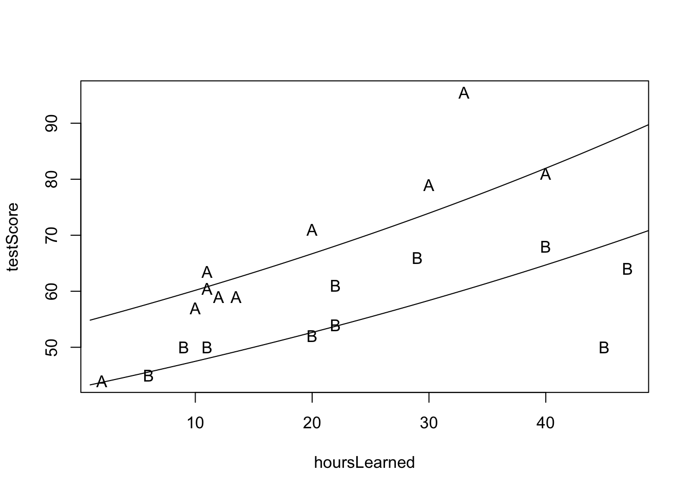
Interpretácia: Náš model predikuje, že pre danú skupinu žiakov je každá ďaľšia hodina učenia asociovaná s navýšením skóre v priemer o približne \(1.03\%\).
\[\begin{eqnarray*} \log(y_i) &=& \beta_0 + \beta_1 x_i + \epsilon_i \\ && x_i \rightarrow x_i + \Delta \\ && \implies \\ \log(y_i) &\rightarrow& \beta_0 + \beta_1 (x_i + \Delta) + \epsilon_i \\ y_i &\rightarrow& e^{\beta_0 + \beta_1 (x_i + \Delta) + \epsilon_i} \\ y_i &\rightarrow& e^{\beta_0 + \beta_1 x_i + \epsilon_i + \beta_1 \Delta} \\ y_i &\rightarrow& e^{\beta_0 + \beta_1 x_i + \epsilon_i} e^{\beta_1 \Delta} \\ y_i &\rightarrow& y_i e^{\beta_1 \Delta} \\ &\sim&\\ y_i &\rightarrow& y_i (1+\beta_1 \Delta) \end{eqnarray*}\]
Táto aproximácia (preto to slovo približne) je založená na tom, že pre malé hodnoty \(x\) je funkcia \((1+\beta x)\) veľmi podobná funkcii \(e^{\beta x}\) ako je zobrazené na tomto obrázku.
# 1+beta*x is similar to exp(beta*x) for small x
x <- seq(-5,5,0.01)
beta <- 0.5
y1 <- 1+beta*x
y2 <- exp(beta*x)
plot(x,y1,type="l",col="red")
lines(x,y2,type="l",col="blue")
points(0,1)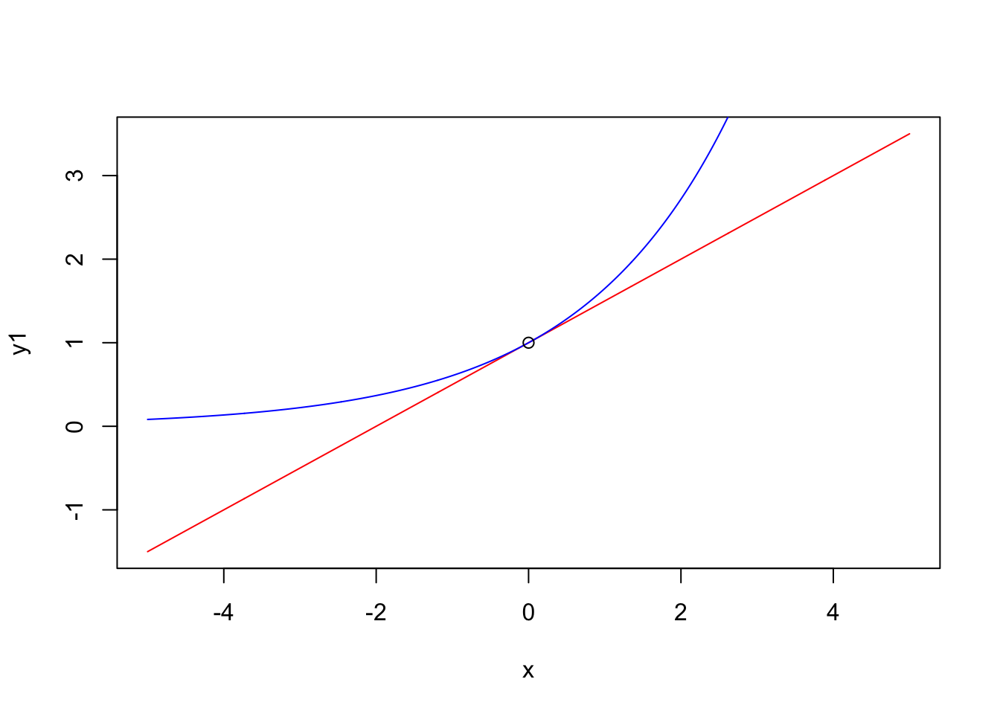
8.9.3 Level-log model
\[testScore_i = \beta_0 + \beta_1 \log(hoursLearned_i) + \beta_2 g^A_i + \epsilon_i\]
#level - log
lhoursLearned <- log(hoursLearned)
lmod_lv_log <- lm(testScore ~ gA + lhoursLearned)
summary(lmod_lv_log)##
## Call:
## lm(formula = testScore ~ gA + lhoursLearned)
##
## Residuals:
## Min 1Q Median 3Q Max
## -15.709 -3.417 0.372 3.872 17.950
##
## Coefficients:
## Estimate Std. Error t value Pr(>|t|)
## (Intercept) 18.257 6.801 2.684 0.015675 *
## gA 15.707 3.256 4.824 0.000159 ***
## lhoursLearned 12.465 2.122 5.874 1.84e-05 ***
## ---
## Signif. codes: 0 '***' 0.001 '**' 0.01 '*' 0.05 '.' 0.1 ' ' 1
##
## Residual standard error: 7.052 on 17 degrees of freedom
## Multiple R-squared: 0.7325, Adjusted R-squared: 0.7011
## F-statistic: 23.28 on 2 and 17 DF, p-value: 1.354e-05#our model predicts that for a given group fixed an increase of
# 1% in time spent learning is associated with an increase of
# test score by approximately on average 0.12 points
# (hence doubling the time learning ~ +12points)
x <- seq(1,50,by=1)
lx <- log(seq(1,50,by=1))
dfA <- data.frame(gA= rep(1,50),lhoursLearned=lx)
predA <- predict(lmod_lv_log,dfA)
dfB <- data.frame(gA= rep(0,50),lhoursLearned=lx)
predB <- predict(lmod_lv_log,dfB)
plot(hoursLearned, testScore, pch=group)
lines(x,predA)
lines(x,predB)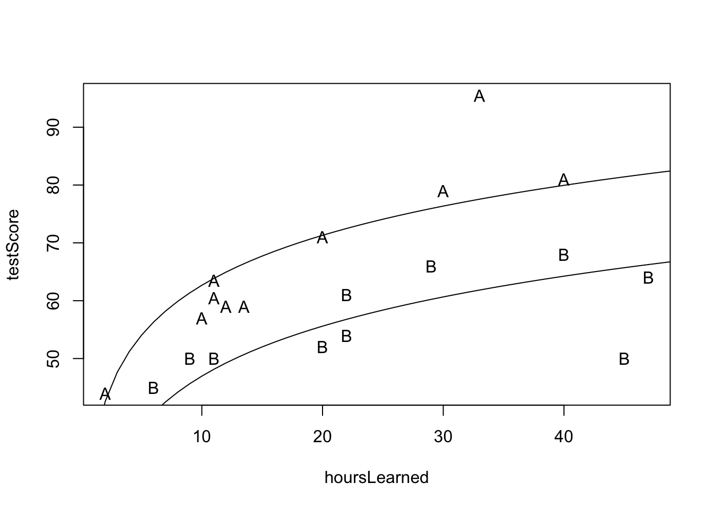
Interpretácia: Náš model predikuje, že pre danú skupinu žiakov je nárast učenia o 1% asociovaný s navýšením skóre v priemere o približne \(0.12\). Takže zdvojnásobnenie je asociované s približne 12 bodmi na teste.
\[\begin{eqnarray*} y_i &=& \beta_0 + \beta_1 \log(x_i) + \epsilon_i \\ && x_i \rightarrow x_i (1+\Delta) \\ && \implies \\ y_i &\rightarrow& \beta_0 + \beta_1 \log(x_i (1+\Delta)) + \epsilon_i \\ y_i &\rightarrow& \beta_0 + \beta_1 \log(x_i) + \beta_1 \log(1+\Delta) + \epsilon_i \\ y_i &\rightarrow& y_i + \beta_1 \log(1+\Delta)\\ &\sim&\\ y_i &\rightarrow& y_i + \beta_1 \Delta \end{eqnarray*}\]
Táto aproximácia (preto to slovo približne) je založená na tom, že pre malé hodnoty \(x\) je funkcia \(\beta \log(1+ x)\) veľmi podobná funkcii \(\beta x\) ako je zobrazené na tomto obrázku.
# beta*log(1+x) is similar to beta*x for small x
# or
# log(1+x) is similar to x for small x
x <- seq(-0.5,1,0.01)
beta <- 0.1
y1 <- beta*log(1+x)
y2 <- beta*x
plot(x,y1,type="l",col="red")
lines(x,y2,type="l",col="blue")
points(0,0)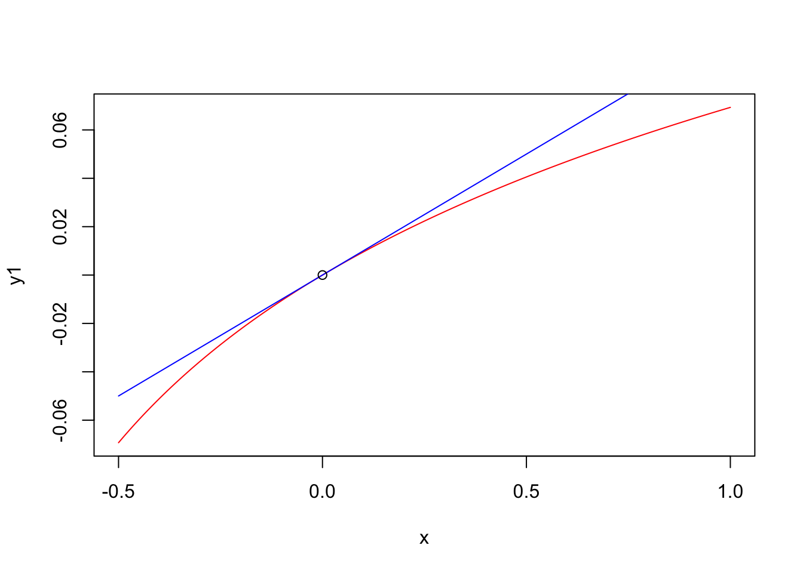
8.9.4 Log-log model
\[\log(testScore_i) = \beta_0 + \beta_1 \log(hoursLearned_i) + \beta_2 g^A_i + \epsilon_i\]
#log - log
ltestScore <- log(testScore)
lmod_log_log <- lm(ltestScore ~ gA + lhoursLearned)
summary(lmod_log_log)##
## Call:
## lm(formula = ltestScore ~ gA + lhoursLearned)
##
## Residuals:
## Min 1Q Median 3Q Max
## -0.261596 -0.044612 0.005685 0.046149 0.205080
##
## Coefficients:
## Estimate Std. Error t value Pr(>|t|)
## (Intercept) 3.40421 0.09547 35.658 < 2e-16 ***
## gA 0.24312 0.04571 5.319 5.65e-05 ***
## lhoursLearned 0.20212 0.02979 6.785 3.18e-06 ***
## ---
## Signif. codes: 0 '***' 0.001 '**' 0.01 '*' 0.05 '.' 0.1 ' ' 1
##
## Residual standard error: 0.099 on 17 degrees of freedom
## Multiple R-squared: 0.7795, Adjusted R-squared: 0.7536
## F-statistic: 30.05 on 2 and 17 DF, p-value: 2.624e-06#our model predicts that for a given group fixed an increase of
# 1% in time spent learning is associated with an increase of
# test score by approximately 0.2% points
# (hence doubling the time learning ~ +20%points)
x <- seq(1,50,by=1)
lx <- log(seq(1,50,by=1))
dfA <- data.frame(gA= rep(1,50),lhoursLearned=lx)
predA <- exp(predict(lmod_log_log,dfA))
dfB <- data.frame(gA= rep(0,50),lhoursLearned=lx)
predB <- exp(predict(lmod_log_log,dfB))
plot(hoursLearned, testScore, pch=group)
lines(x,predA)
lines(x,predB)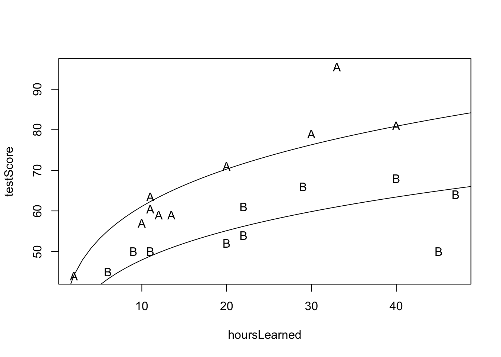
Interpretácia: Náš model predikuje, že pre danú skupinu žiakov je nárast učenia o 1% asociovaný s navýšením skóre v priemerę o približne \(0.2\%\) bodov. Takže zdvojnásobnenie je asociované s približne s 20% nárastom bodov na teste.
\[\begin{eqnarray*} \log(y_i) &=& \beta_0 + \beta_1 \log(x_i) + \epsilon_i \\ && x_i \rightarrow x_i (1+\Delta) \\ && \implies \\ \log(y_i) &\rightarrow& \beta_0 + \beta_1 \log(x_i (1+\Delta)) + \epsilon_i \\ \log(y_i) &\rightarrow& \beta_0 + \beta_1 \log(x_i) + \epsilon_i + \beta_1 \log(1+\Delta) \\ y_i &\rightarrow& e^{\beta_0 + \beta_1 \log(x_i) + \epsilon_i + \beta_1 \log(1+\Delta)}\\ y_i &\rightarrow& e^{\beta_0 + \beta_1 \log(x_i) + \epsilon_i} e^{\beta_1 \log(1+\Delta)}\\ y_i &\rightarrow& y_i e^{\beta_1 \log(1+\Delta)}\\ y_i &\rightarrow& y_i e^{ \log\big((1+\Delta)^{\beta}\big)}\\ y_i &\rightarrow& y_i (1+\Delta)^{\beta}\\ &\sim&\\ y_i &\rightarrow& y_i (1+\beta_1 \Delta) \end{eqnarray*}\]
Táto aproximácia (znovu tu máme slovo približne) je založená na tom, že pre malé hodnoty \(x\) je funkcia \((1+ x)^{\beta}\) veľmi podobná funkcii \(1+\beta x\) ako je zobrazené na tomto obrázku.
# (1+x)^beta is similar to (1+beta*x) for small x
x <- seq(-0.5,1,0.01)
beta <- 0.1
y1 <- (1+x)^beta
y2 <- 1+beta*x
plot(x,y1,type="l",col="red")
lines(x,y2,type="l",col="blue")
points(0,1)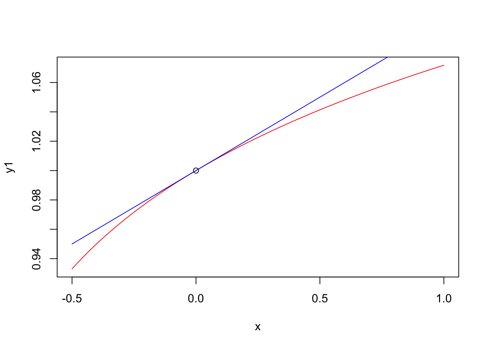
8.10 Zhrnutie
V tejto kapitole sme sa pozreli na kvantifikovanie lineárnej súvzťažnosti medzi dvomi premennými. Na to sme použili nástroj lineárnej regresie. Skúmali sme užitočnosť tohoto modelu ako aj štatistické vlastnosti odhadov, ktoré tento model produkuje. Potom sme pomocou lineárneho modelu používali viacero prediktorov na modelovanie nejakej premennej, ktorá nás zaujíma.
8.11 Cvičenia
R súbor k cvičeniam 18.11.2024
R súbor k cvičeniam 25.11.2024
R súbor s okomentovanými riešeniami
Cvičenie 8.1 (Ag testovanie) Stiahnite si tieto dáta o veľkom Slovenskom antigénovom testovaní z roku 2020. Skúmajte aký je vzťah medzi percentom nakazených v prvom a v druhom kole testovania pre rôzne obce. Pozrite sa oddelene na malé, stredné a veľké obce.
Cvičenie 8.2 (Miera fitu - mechanicky) Mechanicky spočítajte ESS, RSS a ESS a overte ich vzťah. Potom zrátajte \(R^2\) a porovnajte s výsledkom v sumárnej tabuľke.
Cvičenie 8.3 (Sumárna tabuľka - mechanicky) Mechanicky zreprodukujte všetky výsledky (okrem adjusted \(R^2\)) zo sumárnej tabuľke. (Toto je užitočné cvičenie.)
Cvičenie 8.4 (Autá brzdia) Stiahnite si dataset cars z knižnice dataset. Zobrazte závislosť medzi brzdnou dráhou a rýchlosťou (brzdná dráha bude vysveltovaná premenná) a popíšte ich vzťah aj pomocou jednoduchého lineárneho regresného modelu. Odhadnite koeficienty pomocou funkcie lm a interpretujte výsledky v sumárnej tabuľke.
Cvičenie 8.5 (Filmy) Z datasetu movies z knižnice ggplot2movies sa pozrite, či veľkosť rozpočtu vie predikovať priemerné hodnotenie. Na túto závislosť sa pozrite pre rôzne typy filmov a dáta spolu s regresnými priamkami vhodne zobrazte. Kriticky zhodnoťte model a výsledky opatrne interpretujte.
Cvičenie 8.6 (Zločiny) Z datasetu USArrests porovnajte úrovne rôznych zločinov podľa toho, či žije v mestách veľa ľudí (\(y\) budú Murder,Assault,Rape a \(x\) bude UrbanPop ). Dáta zobrazte. Odhadnite koeficienty pomocou funkcie lm a interpretujte výsledky v sumárnej tabuľke.
Cvičenie 8.7 (Filmy (znova)) Z datasetu movies z knižnice ggplot2movies sa znovu pozrieme na predikciu priemerného hodnotenia. Pozrite sa, či typ filmu, rozpočet a dĺžka filmu vedia predikovať hodnotenie.
Cvičenie 8.8 (Študenti) Majme nasledovné dve skupiny študentov. Zaujíma nás, ako je počet hodín strávených učením asociovaný s dosiahnutým skóre v teste.
# you measure how much they learned
hoursLearned <- c(2,40,33,11,20,12,13.5,10,11,30,
6,22,45,20,11,22,40,29,47,9)
# and how they performed on a test
testScore <- c(44, 81, 95.5, 63.5, 71, 59, 59, 57, 60.5, 79,
45, 54, 50, 52, 50, 61, 68, 66, 64, 50)
# and how they performed on a test
#there are two different groups of students
group <- c(rep("A",10), rep("B",10))Využitím lineárneho modelu uvažujte ako sú tieto dve skupiny rôzne: čo sa týka priemerného testovacieho skóre ako aj čo sa týka citlivosti skóre na učenie.
8.12 Domáca úloha 4
Deadline je 13.12.2024 o 20:00. Váš kód aj ostatné pomocné súbory (napríklad dáta) mi zabaľte do jedného (1) zip súboru (nie rar súbor, nie OneDrive folder) v tvare du4_MenoPriezvisko.zip (napr. du4_PeterKovac.zip) a pošlite cez formulár, ktorého odkaz je na stránke. Kód musí byť spustiteľný a podrobne okomentovaný. Odovzdávate mi Vašu vlastnú prácu. Domáca úloha je dobrovoľná a nehodnotená. V prípade, že ju pošlete do termínu dostanete spätnú väzbu
Dáta sú vymyslené, stiahnete si ich tu. Všetky vaše zistenia podrobne okomentujte a podporte vhodným obrázkom.
Cvičenie 8.9 (DÚ 4.1 teplota) Na niekoľkých meracích staniciach máme údaje o teplote, hĺbke jazera a jeho nadmorskej výške.
Urobte jednoduchý lineárny model vysvetľujúci teplotu pomocou nadmorskej výšky jazera. Odhadnite teplotu jazera v nadmorskej výške 1100 m.n.m. a 1250 m.n.m. Tieto predpovede farebne vyznačte do vykresleného grafu. Odhadnite, o koľko sa zmení teplota nejakého jazera, pokiaľ by sa nachádzalo o 100 výškových metrov vyššie alebo nižšie.
Urobte jednoduchý lineárny model vysvetľujúci teplotu pomocou hĺbky jazera a porovnajte ho s prvým lineárnym modelom. Odhadnite teplotu jazera s hĺbkou 22 m.
Urobte lineárny model vysvetľujúci teplotu pomocou nadmorskej výšky aj hĺbky jazera a určte, ktorý z troch modelov je najlepší. Odhadnite teplotu pre jazero v nadmorskej výške 1100 m.n.m. s hĺbkou 22 m.
Cvičenie 8.10 (DÚ 4.2) Urobte jednoduchý lineárny model, kde hodnoty y budete predpovedať pomocou hodnôt x. Pomocou obrázku zistite, či je lineárny model vhodný na takýto typ dát. Pokúste sa spraviť lepší lineárny model a porovnajte ho s predošlým.
dáta x1, y1 z priloženého R-kódu.
dáta x2, y2 z priloženého R-kódu.
Cvičenie 8.11 (DÚ 4.3 - Filmy a Rmd Projekt) Pozrite sa do datasetu movies z knižnice ggplot2movies. Vaše zadanie je vyprodukovať ucelený report o prediktoroch hodnotenia filmu. Zaujíma nás vzťah medzi hodnotením filmu a jeho rozpočtom ako aj dĺžkou a typom filmu.
Vyberte len relevantné hodnotenia.
Bude obsahovať
- Krátky popis datasetu, premenných a problému, ktorý skúmame,
- Sumárne štatistiky premenných,
- Párové grafy a korelácie,
- Porovnanie rôznych podskupín pomocou vhodných štatistických testov a zobrazení.
- Rozumne zvolený lineárny model,
- Závery, interpretácie a zistenia. Nepodceňte túto časť.
Dokument
- musí byť čitateľný pre úplného laika,
- musí byť vytvorený v RMarkdown,
- všetok kód musí byť schovaný ale vhodne okomentovaný v
rmdsúbore, - obrázky musia byť vyladené, musia mať vhodne zvolené vizuálne elementy ako aj popisy,
- môžete ale nemusíte písať v angličtine,
- k tejto úlohe mi prosím pošlite dva súbory:
Rmdsúbor ahtmlsúbor.
Bude to demonštrácia, vizitka a oslava všetkého toho, čo ste sa naučili.